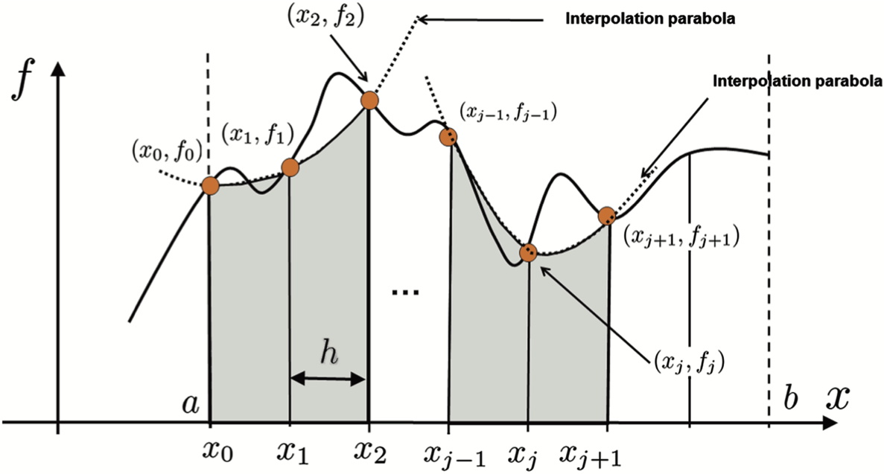

Interpolacja
Metoda numeryczna polegająca na wyznaczaniu w danym przedziale [a ,b] tzw.
funkcji interpolującej, która przyjmuje w nim z góry zadane wartości, w ustalonych
punktach nazywanych węzłami. Metoda ta jest wykorzystywana przy całkowaniu numerycznym(m.in. metoda trapezów, metoda Simpsona), a także pozwala na lokalne
przybliżenie wartości dowolnej funkcji, co z kolei umożliwia np. łatwiejszą analizę złożonych modeli
fizycznych. Wśród metod numerycznych służących do wyznaczania wartości funkcji wyróżniamy m.in:
Interpolację wielomianową
nazywana też interpolacją Lagrange’a – metoda numeryczna przybliżania funkcji tzw. wielomianem Lagrange’a stopnia n przyjmującą w n + 1
punktach, zwanych węzłami interpolacji, wartości takie same jak przybliżana funkcja
Ilustracja interpolacji wielomianowej
W celu zobaczenia działania metody w praktyce kliknij tutaj
Interpolację trygonometryczną
Interpolacja trygonometryczna to metoda stosowana głównie dla danych okresowych. Pozwala na odwzorowanie funkcji, które mają powtarzalny charakter,
takich jak sygnały w elektronice czy dane związane z ruchem harmonicznym. Metoda ta jest niezwykle skuteczna przy analizie sygnałów i obliczeniach
w dziedzinie częstotliwości
 Ilustracja interpolacji trygonometrycznej
W celu zobaczenia działania metody w praktyce
Ilustracja interpolacji trygonometrycznej
W celu zobaczenia działania metody w praktyce kliknij tutaj
Całkowanie
ogólne określenie wielu różnych, choć powiązanych ze sobą, pojęć analizy matematycznej. Najczęściej przez „całkę” rozumie się całkę oznaczoną lub
całkę nieoznaczoną, choć istnieje wiele innych odmian całki. W tym miejscu będziemy się zajmować konkretnie całkami Riemanna, czyli w prostych słowach
całek pozwalających na obliczenia pola pod wykresem wybranej funkcji na określonym przedziale [a ,b]. Aby dało się obliczyć całkę w sensie
Riemanna, funkcja ta na tym przedziale musi być ograniczona, czyli nie może dążyć do nieskończoności, oraz musi być ciągła na prawie całym analizowany
przedziale, przy czym na potrzeby tego kalkulatora rozpatrujemy wyłącznie funkcji całkowicie ciągłe. Całki mają bardzo szerokie zastosowanie w wielu
dziedzinach: fizyce, chemii i wielu innych. Jedno z podstawowych zastosowań całki to liczenie pól powierzchni, długości łuków czy objętości
kształtów nieregularnych czyli takich, które ciężko jest wyliczyć z podstawowych wzorów.
Całkowanie metodą punktu środkowego
Metoda punktu środkowego to jedna z najprostszych metod numerycznego całkowania. Zakłada, że wartość funkcji w środku przedziału jest reprezentatywna
dla całej szerokości przedziału. Przy założeniu, że funkcja jest "gładka" i zmienia się w sposób przewidywalny, metoda ta daje zadowalające wyniki dla
prostych przypadków. Ze względu na swoją prostotę, metoda ta może być mało dokładna w przypadku funkcji o znaczących zmianach w danym przedziale,
dlatego jest często stosowana jako metoda porównawcza.
Ilustracja całkowania metodą punktu środkowego
W celu zobaczenia działania metody w praktyce kliknij tutaj
Całkowanie metodą Simpsona
Metoda Simpsona to bardziej zaawansowana metoda numerycznego całkowania, która aproksymuje funkcję za pomocą paraboli. Podejście to znacząco zwiększa dokładność w porównaniu do prostszych metod, takich jak trapezy czy punkt środkowy. Szczególnie dobrze sprawdza się przy funkcjach "gładkich" i zmiennych w sposób ciągły:
Metoda Simpsona dzieli obszar na podprzedziały, a następnie stosuje formułę paraboliczną do każdego z nich. Jest to jedna z najpopularniejszych metod całkowania w inżynierii i naukach ścisłych.

Więcej informacji znajdziesz na stronie: Reguła Simpsona - Wikipedia.
Całkowanie metodą trapezów
Metoda trapezów to klasyczne podejście do numerycznego całkowania, w którym obszar pod wykresem funkcji jest aproksymowany za pomocą trapezów. Przy podziale przedziału całkowania na małe części metoda ta może osiągać wysoką dokładność. Wzór podstawowy jest następujący:
Metoda trapezów jest szeroko stosowana ze względu na swoją prostotę i intuicyjność, a także na możliwość łatwego rozszerzenia jej na wiele podprzedziałów.
Więcej informacji znajdziesz na stronie: Metoda trapezów - Wikipedia.
Rozwiązywanie układów równań metodą Gaussa
Metoda Gaussa to algorytm służący do rozwiązywania układów równań liniowych poprzez eliminację zmiennych. Proces ten polega na przekształceniu macierzy układu do postaci trójkątnej, co umożliwia łatwe wyznaczenie wartości poszczególnych zmiennych. Wzór ogólny dla rozwiązania układu wygląda tak:
Algorytm Gaussa jest szeroko stosowany w matematyce, fizyce i inżynierii ze względu na swoją efektywność i możliwość zastosowania w różnych typach problemów. W praktyce może być modyfikowany, aby poprawić stabilność obliczeń.
Więcej informacji znajdziesz na stronie: Eliminacja Gaussa - Wikipedia.